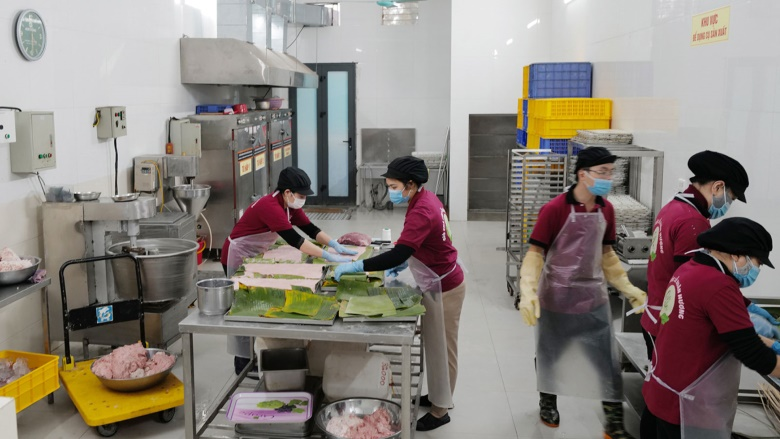

Sản xuất giò lụa, chả, nem chua tại Phú Thọ
Hộ Kinh Doanh Lê Thị Minh Thắng được thành lập với mong muốn giữ gìn và phát huy hương vị truyền thống của giò lụa, chả quế và nem chua Việt Nam. Chúng tôi sử dụng nguyên liệu thịt tươi ngon, kết hợp cùng bí quyết gia truyền để tạo ra sản phẩm không chỉ ngon miệng mà còn an toàn cho sức khỏe.
Chúng tôi luôn đặt chất lượng và sự hài lòng của khách hàng lên hàng đầu. Từng mẻ giò, chả đều được chế biến thủ công, kiểm tra kỹ lưỡng trước khi giao tới tay khách hàng.
